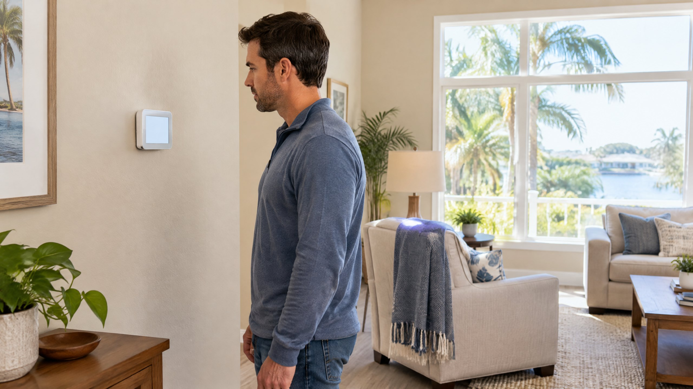

What Does AUX Heat Mean?
AUX is short for auxiliary: supplemental or backup heating. In a Heat Pump system, the compressor-based heating and the backup heat are different parts of the heating arrangement. A thermostat can request the backup heat when the configured controls call for it. The indicator is not, by itself, an error code. [1]
Electric resistance heat strips in the indoor air handler are one possible backup source; a dual-fuel system can use a furnace instead. Do not identify the installed backup equipment from the word AUX alone. Trane describes both arrangements, but that does not establish what is installed in your home. [1] This article concerns a heating status on an existing system, not choosing a new heating appliance.
Why Might AUX Appear After I Raise the Temperature?
A larger increase in the heating target can create a recovery demand that prompts supplemental heat on some systems. Trane describes this as one reason AUX may appear. The thermostat is responding to the requested heating change; the message alone does not prove the outdoor unit has failed. [1]
DOE's Federal Energy Management Program describes Heat Pump-specific thermostats that raise temperature gradually to avoid unnecessary electric resistance heating. Its guidance supports discussing compatible controls, not a ban on every schedule or a universal recommended temperature. [2] Ask about recovery features supported by your actual control instead of changing installer settings to force a result.
Our lower-thermostat cooling explanation addresses a separate question: cooling targets do not work as a universal speed dial. Do not transfer that cooling-mode explanation directly to heating recovery and backup-heat staging.
Can Cold Conditions or Defrost Call for Backup Heat?
Yes, depending on the system. Supplemental heating can be requested when compressor heating is not meeting the demand or during a Heat Pump's defrost operation. Trane identifies cold conditions and defrost as possible contexts. [1] AUX does not tell you which context applies or prove that a defrost cycle is underway.
There is no single outdoor temperature, target-temperature gap, or normal runtime that diagnoses every installed system. The thermostat, equipment, backup source, and configured staging affect operation. Trane Home's support guidance specifically describes different stages and lockout configurations that require technician setup. Those details are a product-family example, not instructions for all thermostats. [3]
For a Tampa or North Tampa homeowner who rarely uses heating, an unfamiliar message may simply be unfamiliar operation. It still deserves attention if the room is not warming, the behavior has changed, or the indicator repeatedly remains on without an explained reason.
Is AUX the Same as Emergency Heat?
Not necessarily. On the conventional Heat Pump controls described in Trane's consumer explanation, auxiliary heat is requested automatically, while Emergency Heat is a selected backup mode that bypasses compressor heating. [1] The available modes, labels, and lockouts depend on the installed system; read its operating instructions.
Do not select Emergency Heat simply because you see AUX or want faster warming. If the Heat Pump is not operating, contact the service provider for guidance on the appropriate temporary mode and repair. Nor should you disable backup heat, adjust lockout temperatures, or reconfigure stages to hide the indicator. Trane Home says its auxiliary configuration requires an HVAC technician. [3]
What Can You Observe Without Opening Equipment?
Keep a short record of what the thermostat shows and what the room is doing. Note the selected mode, room temperature, heating target, any recent schedule or target change, and whether warmth is improving. If an app offers runtime history, share that existing record; it is a clue rather than a component diagnosis.
On mobile, scroll the table sideways to read both columns.
| Observation | Useful information for service |
|---|---|
| AUX appeared after a target increase | Report the previous target, new target, and whether the room warmed. |
| Display says EM Heat or Emergency Heating | Report the exact selected mode and whether someone changed it. |
| AUX stays displayed and the room remains cold | Describe duration and performance without assuming the backup or outdoor unit has failed. |
| The behavior began after a thermostat change | Share the control model and recent installation or configuration work. |
Follow owner instructions for an accessible filter and keep furniture clear of supply and return openings. Filter fit and airflow are separate from whether AUX was requested; neither proves a heating fault. Our filter-selection guide explains fit and compatibility. Do not open electrical compartments, bypass controls, or attempt wiring or refrigerant work.
When Should You Request a Heating Assessment?
Request Heat Pump repair assessment when AUX is persistent or recurring without an explained operating reason, heating does not reach the usual target, or performance has changed. You do not need to wait for a universal time limit from an online article. An indicator that appeared once during recovery and cleared is different from repeated poor heating.
If the mode, displayed target, or response seems wrong, ask about thermostat repair as part of the assessment—not automatic thermostat replacement. ENERGY STAR identifies thermostat settings, electrical connections, and operating controls as professional checks. [4] The technician should compare the request for heat with actual equipment operation and explain what evidence supports any repair.
Does AUX Always Mean a Higher Bill?
DOE's federal guidance identifies the inefficient nature of electric resistance heating elements and recommends minimizing unnecessary use. [2] Trane also explains that electric strips use more energy than Heat Pump heating. [1] That does not establish a fixed dollar increase or prove excessive consumption from one AUX appearance. Backup type, operating duration, rates, and conditions all matter.
Review unexplained use rather than suppressing necessary heat. For ongoing care, discuss a Heat Pump tune-up and the checks appropriate to your system. ENERGY STAR's professional checklist includes thermostat settings, electrical connections, and the start-operate-stop sequence. [4] Maintenance is not a promise that backup heat will never be needed.
Frequently Asked Questions
Does AUX mean my Heat Pump is broken?
No. It identifies supplemental heating behavior, which can occur during recovery, heating demand, or defrost depending on the system. Persistent AUX with poor heating needs assessment, but the message alone does not identify a failed component.
Should I switch to Emergency Heat when AUX appears?
Not simply because AUX appears. Emergency Heat can bypass compressor heating on supported controls. Follow your equipment instructions and contact the service provider if the Heat Pump is not operating; do not use the mode as a faster-warming shortcut.
Should I turn off auxiliary heat to reduce energy use?
Do not disable backup heat or change installer staging and lockout settings to hide the message. Review the schedule and unexplained use with a technician. DOE describes compatible thermostats that can raise the target gradually to avoid unnecessary resistance heating.
How long can AUX run before I should call?
There is no universal runtime cutoff for every system. Report recurring or persistent unexplained use, a room that is not warming, or a change from usual operation. The equipment, controls, and conditions determine the appropriate assessment.
Sources
- Trane: What Is Auxiliary Heat? — supplemental sources, recovery, defrost, and the conventional AUX versus Emergency Heat distinction; numeric examples are not universalized here.
- DOE Federal Energy Management Program: Residential Air-Source Heat Pumps — compatible recovery controls and resistance-heating efficiency; federal purchasing requirements and savings examples are not applied to homeowners here.
- Trane Home: Aux Heat and Emergency Heat — product-specific stages, status labels, and technician-configured lockouts.
- ENERGY STAR: Maintenance Checklist — professional thermostat, electrical-connection, and operating-sequence checks.
Editorial Source Review & Publisher
Published by On The Way Heating & Air using the sources above for Tampa and North Tampa homeowners. This is general equipment-behavior guidance, not an inspection, model-specific setup instruction, or diagnosis. On The Way is a local, family-rooted company. Share the actual display and heating behavior so the service conversation starts with what changed.